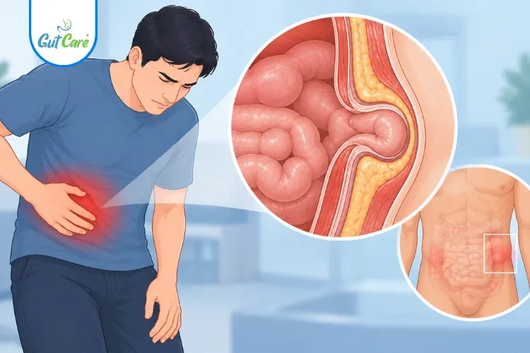
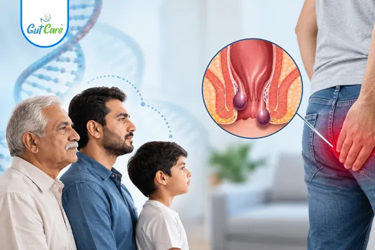

Expert answers to the questions you hesitate to ask
Symptoms, causes and modern treatment options, explained by our colorectal and laparoscopic specialists.
-

HerniaWhat Is a Spigelian Hernia? Symptoms, Risks, and Treatment Options
A rare hernia that is easy to miss. How to recognise it, why it matters and how it is repaired.
Read article - Hernia
Sports Hernia (Athletic Pubalgia): Symptoms and Treatment
Groin pain that flares with sport? What a sports hernia is and the options for getting back in the game.
Read article - Colorectal Cancer
Hereditary Colorectal Cancer: Who Needs Genetic Testing?
When family history raises your risk, and how genetic testing guides earlier screening.
Read article - Constipation
Rectocele and Constipation: When the Rectum Bulges
How a rectocele can cause difficult bowel movements, and the treatments that help.
Read article - Constipation
Slow Transit Constipation: Causes, Tests and Treatment
When the bowel moves too slowly: what causes it, how it is diagnosed and managed.
Read article -

PilesIs Piles Hereditary? Understanding Genetic Risk Factors
Does piles run in families? Separating genetic risk from lifestyle factors you can control.
Read article - Piles
Doppler-Guided Hemorrhoidal Artery Ligation (THD) for Piles
A minimally invasive technique that targets the blood supply to piles. Who it suits and what to expect.
Read article - Anal Fistula
Seton Treatment for Anal Fistula: Types, Duration, and Care
How a seton helps a fistula heal, the different types used, and caring for it at home.
Read article - Anal Fistula
LIFT Procedure for Anal Fistula: How It Preserves the Sphincter
A sphincter-sparing fistula operation that protects continence. How LIFT works and recovery.
Read article
Looking for older posts? Browse the full article archive.